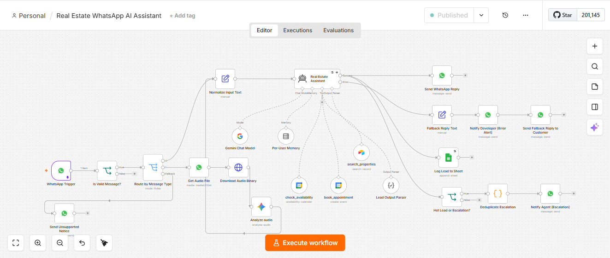

Real Estate WhatsApp AI Assistant
An AI-powered WhatsApp assistant that answers property enquiries, qualifies leads, books viewings, and knows exactly when to hand a conversation over to a human, all without the buyer ever waiting.
The Business Problem
Speed decides everything in real estate. A buyer rarely messages just one agent. They message two or three at the same time, and whoever replies first is usually the one who gets the client. It's an uncomfortable truth of the industry, and the obvious fix, hiring someone to be available around the clock, simply isn't realistic for most teams.
Why this matters: That gap is exactly what this assistant was built to close.
Solution Overview
Every message on WhatsApp, typed or spoken, gets an instant reply drawn from live property data, not a guess. The assistant scores every lead as it talks to them, books viewings by checking real calendar availability, and hands the conversation to a human the moment a lead turns serious or asks something outside what it knows.
Workflow Architecture
Tools & Integrations
Key Automation Steps
- 1Any Message, Any Format: The assistant responds the moment a message arrives, whether it's typed or sent as a voice note. Voice messages are automatically transcribed, so a buyer speaking a quick question gets treated exactly the same as one who types it out.
- 2Answering from Real Property Data: Every reply about a property, its price, its availability, its details, comes directly from a live Airtable database, not a guess. A wrong price or a listing that's already sold costs an agency its credibility with a buyer.
- 3Qualifying Every Lead: As the conversation happens, the assistant scores the lead as hot, warm, or cold based on what they're asking and how serious they sound, and logs it straight to a spreadsheet.
- 4Booking Without the Back and Forth: If a buyer wants to view a property, the assistant checks real calendar availability before confirming anything, and books the appointment directly, re-checking availability rather than relying on what it said earlier in the conversation.
- 5Knowing When to Bring in a Person: The assistant isn't trying to replace the agent, it's trying to buy them time. When a lead turns serious, or when a question comes up that isn't something it can answer from the property data it has, it loops in the actual team instead of guessing or stalling.
Reliability & Error Handling
Workflow Screenshot

Why This Matters
This isn't about removing people from the conversation. It's about making sure no buyer is ever left waiting simply because it's outside business hours, or because three other enquiries came in at the same time. The moment a lead turns serious, a real person is already looped in, with the context already gathered.